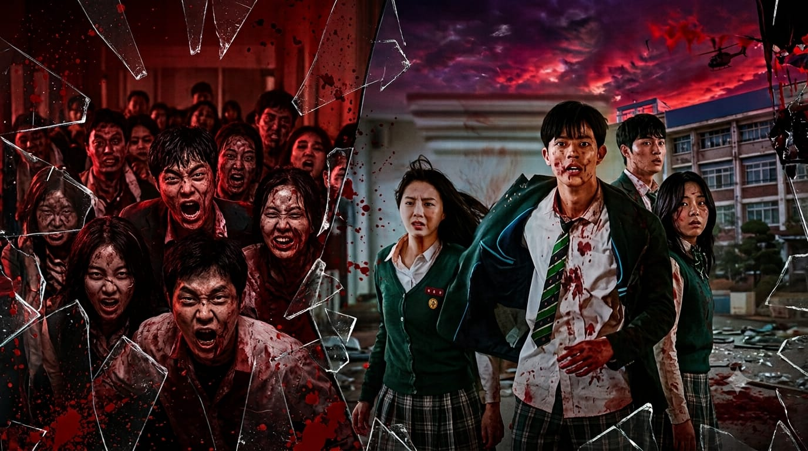
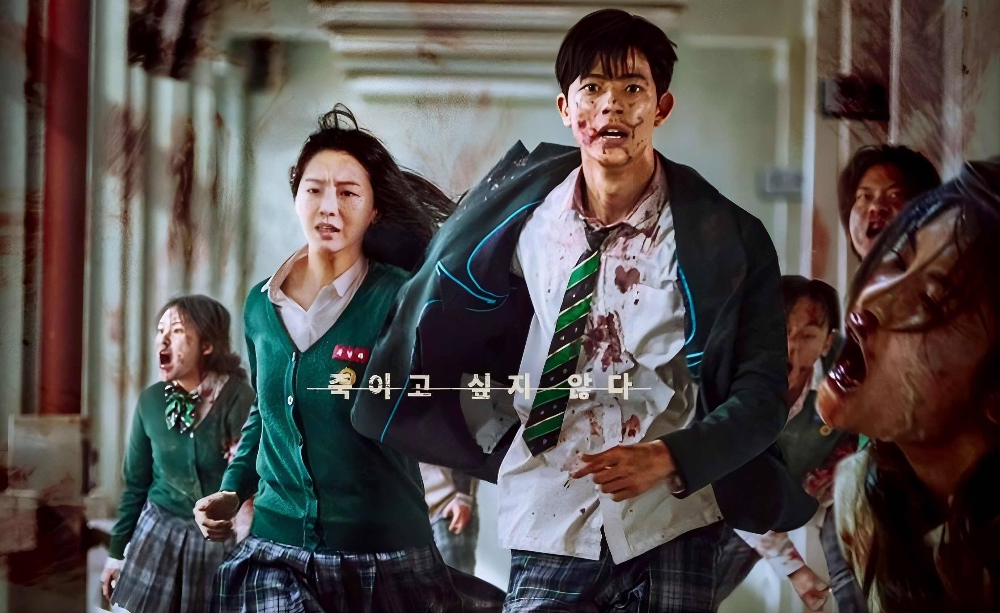
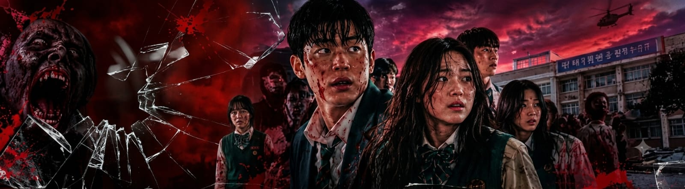

PERSONAJES →

EPISODIOS →

GALERIA →


NO ES SOLO UN VIRUS...
ES EL FIN DEL MUNDO.
Un grupo de estudiantes queda atrapado en su escuela cuando un virus zombie se propaga. Sangre por todos lados. Ahora deben luchar por sobrevivir.
▶️ VER AHORA

Cuando un virus mortal se propaga en la secundaria Hyosan, los estudiantes luchan por sobrevivir. La escuela se convierte en un infierno lleno de sangre.
" SI NO LOS MATAS , ELLOS TE COMEN "
10 SOBREVIVIENTES MANCHADOS DE SANGRE


12 CAPITULOS DE PURA SANGRE
▶️Todo empieza con sangre.
▶️Pasillos llenos de sangre.
▶️Sangre por todos lados.
FOTOS SANGRIENTAS

ALL OF US ARE DEAD - 2022

Netflix 2022. Un profesor crea un virus. Se sale de control. La secundaria Hyosan se vuelve un rastro con sangre en las paredes.
SOBREVIVIR ES LA UNICA OPCION
VOLVER A INICIO